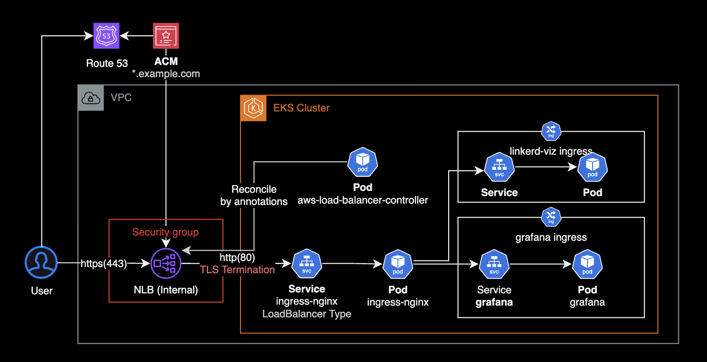
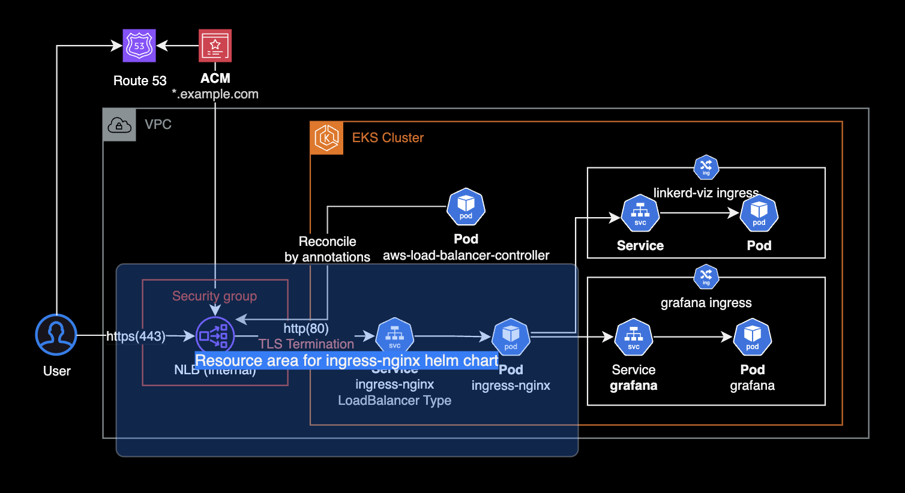
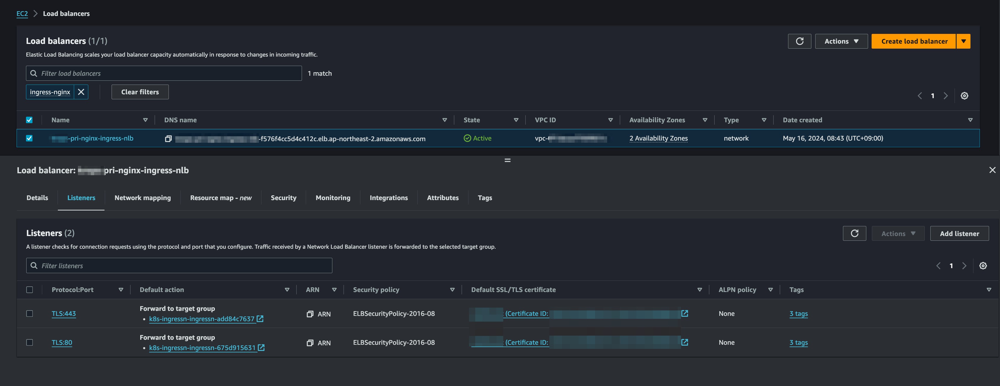
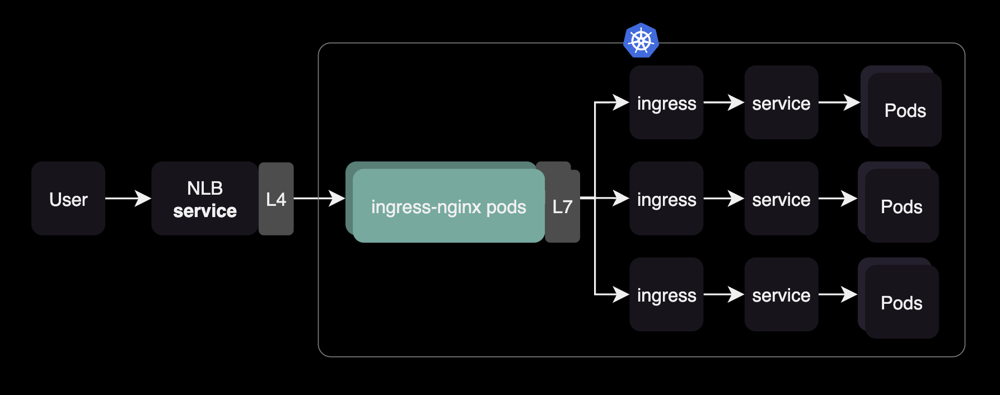
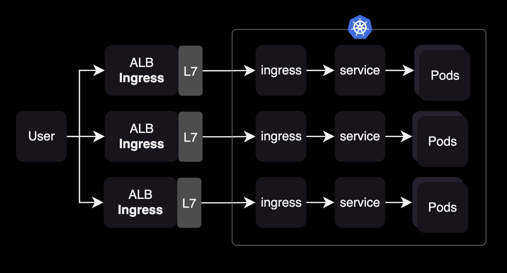

Ingress nginx controller
개요
ingress-nginx controller와 Internal NLB + ACM 조합해서 네트워크 구성하기.
환경

구성하기
ingress-nginx chart
ingress-nginx 차트에서 service를 생성합니다.
# ingress-nginx/values.yaml
controller:
...
service:
# -- Enable controller services or not. This does not influence the creation of either the admission webhook or the metrics service.
enabled: true
external:
# -- Enable the external controller service or not. Useful for internal-only deployments.
enabled: true
# -- Annotations to be added to the external controller service. See `controller.service.internal.annotations` for annotations to be added to the internal controller service.
annotations:
service.beta.kubernetes.io/aws-load-balancer-name: <INTERNAL_NLB_NAME>
service.beta.kubernetes.io/aws-load-balancer-scheme: internal
service.beta.kubernetes.io/aws-load-balancer-nlb-target-type: ip
service.beta.kubernetes.io/aws-load-balancer-cross-zone-load-balancing-enabled: "true"
service.beta.kubernetes.io/aws-load-balancer-ssl-cert: "arn:aws:acm:ap-northeast-2:<ACCOUNT_ID>:certificate/<ACM_ID>"
service.beta.kubernetes.io/aws-load-balancer-security-groups: sg-013f5ee1423faf2ca
service.beta.kubernetes.io/aws-load-balancer-attributes: deletion_protection.enabled=true
ingress-nginx 파드에 고가용성 및 파드 오토스케일링을 적용하기 위해 다음과 HPAHorizontal Pod Autoscaler를 설정합니다.
# ingress-nginx/values.yaml
controller:
# Mutually exclusive with keda autoscaling
autoscaling:
enabled: true
annotations: {}
minReplicas: 2
maxReplicas: 11
targetCPUUtilizationPercentage: 50
targetMemoryUtilizationPercentage: 50
behavior: {}
CPU 사용률이 50% 또는 메모리 사용률이 50%를 기준으로 HPA에 의해 파드 스케일 인/아웃이 진행됩니다.
nginx IngressClass를 클러스터의 디폴트 ingressClass로 지정하려면 controller.ingressClassResource.default 값을 true로 설정합니다.
# ingress-nginx/values.yaml
controller:
...
ingressClassResource:
# -- Name of the IngressClass
name: nginx
# -- Create the IngressClass or not
enabled: true
# -- If true, Ingresses without `ingressClassName` get assigned to this IngressClass on creation.
# Ingress creation gets rejected if there are multiple default IngressClasses.
# Ref: https://kubernetes.io/docs/concepts/services-networking/ingress/#default-ingress-class
default: true
nginx IngressClass는 ingress-nginx 컨트롤러 차트에 포함되어 있습니다. 차트를 설치하면 nginx ingressClass가 같이 생성됩니다.
$ kubectl get ingressclass
NAME CONTROLLER PARAMETERS AGE
alb ingress.k8s.aws/alb <none> 5d19h
nginx k8s.io/ingress-nginx <none> 5d19h
ingress-nginx 컨트롤러를 통해 특정 Ingress를 제어하고 싶은 경우에는 ingressClassName을 nginx로 지정할 수 있습니다.
아래는 Ingress 리소스에 ingressClass로 nginx를 지정하는 예시입니다.
apiVersion: networking.k8s.io/v1
kind: Ingress
...
spec:
ingressClassName: nginx
ingress-nginx 헬름 차트를 설치하면 LoadBalancer 타입의 Service 리소스가 생성됩니다.
ingress-nginx 차트에 의해 배포, 관리되는 인프라 리소스 영역은 다음과 같습니다.

사전에 헬름 차트를 통해 AWS Load Balancer Controller가 위 서비스 리소스에 설정된 annotation을 확인한 후, 그에 맞게 설정이 적용된 Network Load Balancer를 생성합니다.

ingress-nginx 차트에서 NLB는 loadBalancer 타입의 service 리소스를 통해 생성되며, 자세한 상세 설정은 AWS LBC에 의해 제어되는 구조입니다.
TLS Termination 설정
NLB에 TLS Termination 설정을 적용합니다.
앞단의 NLB에서 TLS Termination이 적용되지 않으면 ingress-nginx 뒷단의 서비스들로 접근시 400 Bad Request 에러, 즉 The plain HTTP request was sent to HTTPS port 에러가 발생할 수 있습니다.
트래픽이 NLB의 443 포트 리스너로 들어오면 TLS를 종료하고 ingress-nginx Pod의 80 포트로 전달하도록 loadBalancer 서비스 설정을 변경합니다.
controller:
...
service:
...
ports:
# -- Port the external HTTP listener is published with.
http: 80
# -- Port the external HTTPS listener is published with.
https: 443
targetPorts:
# -- Port of the ingress controller the external HTTP listener is mapped to.
http: http
# -- Port of the ingress controller the external HTTPS listener is mapped to.
- https: https
+ https: http
위 service 리소스의 설정을 변경하고 헬름 차트를 재배포하게 되면 AWS Load Balancer Controller는 NLB의 443 포트 리스너 설정을 변경합니다.
더 자세한 사항은 Stack overflow 논의를 확인합니다.
Grafana ingress 구성
ingress-nginx 파드가 트래픽을 받은 후, Grafana 파드로 연결하기 위해 Grafana Ingress 리소스를 생성합니다.
이 때, Grafana Ingress를 ingress-nginx 컨트롤러와 연결하기 위해 ingressClassName과 kubernetes.io/ingress.class 어노테이션을 추가합니다.
# kube-proemtheus-stack/values.yaml
grafana:
ingress:
## If true, Grafana Ingress will be created
##
enabled: true
## IngressClassName for Grafana Ingress.
## Should be provided if Ingress is enable.
##
ingressClassName: nginx
## Annotations for Grafana Ingress
##
annotations:
nginx.ingress.kubernetes.io/rewrite-target: /
nginx.ingress.kubernetes.io/ssl-redirect: "false"
kubernetes.io/ingress.class: nginx
ingress-nginx 컨트롤러가 설치된 환경에서 ingressClassName: nginx로 설정하면, Grafana Ingress 리소스는 NGINX Ingress 컨트롤러에 의해 처리됩니다. 이는 NGINX 컨트롤러가 Grafana에 대한 HTTP(S) 요청을 관리하고 라우팅함을 의미합니다.
Ingress 리소스에서 kubernetes.io/ingress.class annotation은 Kubernetes v1.18부터 deprecation 되었습니다. 대신 spec.ingressClassName을 사용합니다.
apiVersion: networking.k8s.io/v1
kind: Ingress
metadata:
annotations:
- kubernetes.io/ingress.class: nginx
name: kube-prometheus-stack-grafana
namespace: monitoring
spec:
+ ingressClassName: nginx
위 kube-prometheus-stack의 차트 설정에 의해 생성된 grafana ingress 리소스 설정은 다음과 같습니다.
apiVersion: networking.k8s.io/v1
kind: Ingress
metadata:
annotations:
meta.helm.sh/release-name: kube-prometheus-stack
meta.helm.sh/release-namespace: monitoring
nginx.ingress.kubernetes.io/rewrite-target: /
nginx.ingress.kubernetes.io/ssl-redirect: "false"
labels:
app.kubernetes.io/instance: kube-prometheus-stack
app.kubernetes.io/managed-by: Helm
app.kubernetes.io/name: grafana
app.kubernetes.io/version: 10.4.1
helm.sh/chart: grafana-7.3.9
name: kube-prometheus-stack-grafana
namespace: monitoring
spec:
ingressClassName: nginx
rules:
- host: grafana.example.com
http:
paths:
- backend:
service:
name: kube-prometheus-stack-grafana
port:
number: 80
path: /
pathType: Prefix
status:
loadBalancer:
ingress:
- hostname: <REDACTED>
결론
ingress-nginx 컨트롤러를 도입했을 때 가장 큰 기대효과는 여러 네임스페이스의 여러 개의 ingress 리소스를 nginx 파드를 통해 쉽게 라우팅 제어할 수 있습니다.

ingress-nginx-controller와 같은 Ingress controller를 사용하지 않으면 Kubernetes 클러스터에서 네임스페이스마다 Ingress 리소스와 ALB (Application Load Balancer)를 각각 설정해야 할 필요가 생깁니다. 이는 네트워크 인프라 관리의 복잡성과 비용을 증가시킬 수 있습니다.

참고자료
NLB
Network Load Balancer, 이제 보안 그룹 지원
AWS Load Balancer Controller의 NLB 설정
Kubernetes
Deprecating the Ingress Class Annotation